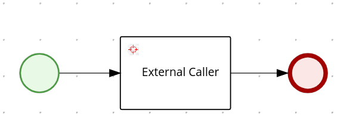
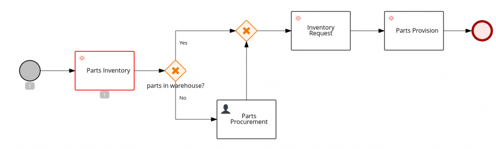
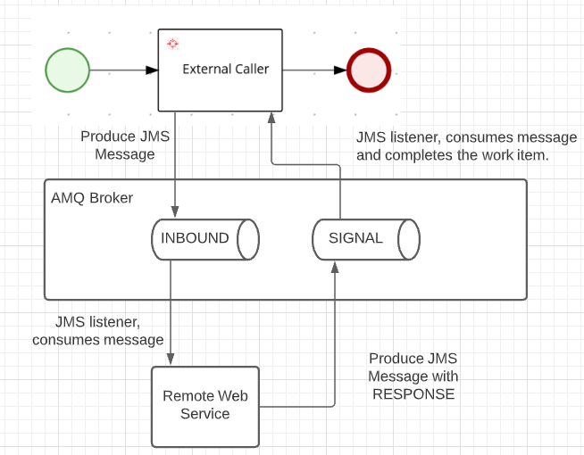

Orchestrate web services using RHPAM and AMQ
We, at the Intelligent Application Practice, recently received the request from one of our TELCO customers to provide a proof of concept about orchestrate web services using RHPAM and AMQ. Additionally, I recently came across the following post in the internet, explaining that REST is not the only way to integrate web service communication: Experience awesomeness event driver microservices.
The previous post may give you an idea on what we are trying to accomplish here: we often think about invoking web services from our BPMN processes:

We have multiple ways to resolve this implementation. For example, the REST work item handler, that help us send a REST/HTTP request, so that we can integrate our processes with remote web services.
We also have the JMS work item handler that produces a message in a given queue name, although it seems also to default to the KIE-SERVER SIGNAL QUEUE used to complete work items.
In both cases, the situation that arises is that both work item handlers act to interact with the external web service, and later complete the work item that generated the action.
In our proof of concept here, we need to avoid that work item completion, so that an external entity provides in a later time, asynchronously, the completion event, along with information about the result of the remote web service execution, as in the following example:

Note that the process here is waiting for the external web service to integrate its response back to the BPMN process, containing the response to the inventory system on weather there was enough materials or not, so that our process can take the next gateway action appropriately, like described in the following picture:

This is accomplished with the following custom work item handler implementation:
import javax.ejb.Stateless;
import javax.ejb.TransactionAttribute;
import javax.ejb.TransactionAttributeType;
import javax.jms.Connection;
import javax.jms.ConnectionFactory;
import javax.jms.JMSException;
import javax.jms.Message;
import javax.jms.MessageProducer;
import javax.jms.Queue;
import javax.jms.Session;
import javax.naming.InitialContext;
import javax.naming.NamingException;
import org.jbpm.process.workitem.core.AbstractLogOrThrowWorkItemHandler;
import org.kie.api.runtime.process.WorkItem;
import org.kie.api.runtime.process.WorkItemManager;
import org.kie.internal.runtime.Cacheable;
@Stateless
public class SimpleExternalCaller extends AbstractLogOrThrowWorkItemHandler implements Cacheable {
private static final int DEFAULT_PRIORITY = 5;
private static final String TARGET_QUEUE = "java:/QUEUE/INBOUND"; // [1]
private String connectionFactoryName = System.getProperty("org.kie.executor.jms.cf", "java:/JmsXA"); // [2]
private ConnectionFactory connectionFactory;
private boolean transacted = true;
public SimpleExternalCaller() {
super();
try {
InitialContext context = new InitialContext();
if (this.connectionFactory == null) {
this.connectionFactory = (ConnectionFactory) context.lookup(connectionFactoryName);
}
} catch (NamingException e) {
// Catch action for configuration error
}
}
@TransactionAttribute(value = TransactionAttributeType.MANDATORY)
@Override
public void executeWorkItem(WorkItem workItem, WorkItemManager manager) {
if (connectionFactory == null) {
handleException(new RuntimeException(
"Failed when assigning value for AMQ connection, check the messaging configuratio"));
} else {
Connection queueConnection = null;
Session queueSession = null;
try {
queueConnection = connectionFactory.createConnection();
queueSession = queueConnection.createSession(transacted, Session.AUTO_ACKNOWLEDGE);
sendMessage(queueSession, TARGET_QUEUE, workItem); // [3]
} catch (Exception e) {
handleException(e);
} finally {
if (queueSession != null) {
try {
queueSession.close();
} catch (JMSException qce) {
// catch exception while closing connection
}
}
if (queueConnection != null) {
try {
queueConnection.close();
} catch (JMSException cce) {
// catch exception while closing connection
}
}
}
}
}
private void sendMessage(Session queueSession, String queueName, WorkItem workItem)
throws NamingException, JMSException {
InitialContext context = new InitialContext();
Queue queue = (Queue) context.lookup(queueName);
Connection queueConnection = null;
MessageProducer producer = null;
try {
queueConnection = connectionFactory.createConnection();
queueSession = queueConnection.createSession(transacted, Session.AUTO_ACKNOWLEDGE);
Message message = queueSession
.createTextMessage("{'partNumber': 123, 'quantity': 300, 'assemblyLine':'abc-def'}");
String businessAutomationToken = workItem.getParameter("appName") + ":" + workItem.getProcessInstanceId() + ":"
+ workItem.getId();
message.setStringProperty("baToken", businessAutomationToken); // [4]
producer = queueSession.createProducer(queue);
queueConnection.start();
producer.setPriority(DEFAULT_PRIORITY);
producer.send(message);
} catch (Exception e) {
handleException(e);
} finally {
if (producer != null) {
try {
producer.close();
} catch (JMSException pce) {
// catch exception while closing connection to producer
throw pce;
}
}
}
}
@Override
public void abortWorkItem(WorkItem workItem, WorkItemManager manager) {
// No action to be taken during work item abort
}
@Override
public void close() {
// Nothing to release when container is removed
}
}
Implementation Notes
- The destination queue is hard-coded to be QUEUE/INBOUND, this QUEUE needs to be part of the naming assets in the EAP web service, see the Register Destination QUEUE section that explains how to configure this outbound destination.
- The connection factory name, is also part of the naming resources in the server, here we are using the same system property name that the JBPM EXECUTOR uses to define its connection factory for the AMQ broker, if the property is not given to the system properties of the kie-server, we default that value to java:/JmsXA. See the Connect RHPAM to External AMQ broker section that explains how the remote connection is established.
- We send the message to the defined queue, note that after this instruction, we are not “completing” the work item like other implementations, in our case, the work item creates a wait state until an external entity completes the work item using remote resources, such as the REST API Complete Work Item Endpoint (Search for the endpoint that “Completes a specified work item”), or as we will see in the Enabling SIGNAL JMS section, we use the JMSSignalReceiver Message Driven Bean (MDB) to complete the work item through JMS.
- The remote web service will need to know information about the work item that is generating the message, so that when in produces a response, it will be able to send the reference information back to RHPAM about the work item that RHPAM is requested to complete with certain data. We will call this reference number the “Business Automation Token”. The Business Automation Token, or B-A-Token for short, includes information about the deployment id, the process instance id, and the work item id that generated the request. See the Replying to RHPAM section for information on how the remote web service generates the proper response.
Connect RHPAM to External AMQ broker
A vital part for orchestrate web services using RHPAM and AMQ, is to make RHPAM to identify the location of the remote AMQ broker, so that it can produce messages to it, and consume messages from it.
The RHPAM configuration to identify the AMQ Broker depends on the JNDI configuration for messaging subsystem in the EAP configuration.
Local Setup
For a local setup of this PoC, let’s start by installing a local AMQ broker:
- Unzip the AMQ product locally.
- Install a broker by running the command:
${ARTEMIS_HOME}/bin/activemq create broker - Start the broker by running the command:
${broker_home}/bin/activemq run
You can also find useful information here.
Now, let’s install a RHPAM local instance:
- Download and unzip EAP server to your local environment.
- Download and unzip business-central deployable.
- Merge the contents of business-central deployable into the EAP server directory.
- Download and unzip kie-server deployable.
- Place the kie-server.war in the
$EAP_HOME/standalone/deploymentsdirectory, and create a file namedkie-server.war.dodeploy. - Uncomment the sections for the
controllerUserconfiguration atstandalone-full.xml,application-roles.properties, andapplication-users.properties.
Of course, there are other ways to install RHPAM, but I prefer this manual summary of actions, I feel that I have more control about what is being changed to locally install what I need.
Now, here comes the Local Setup, if as a pre-requisite you already had RHPAM and AMQ broker installed, you can directly follow these steps to allow RHPAM to connect to AMQ broker:
- In the
standalone-full.xml, create an outbound-socket-binding, with a remote destination to the host and port of your amq broker:
<socket-binding-group name="standard-sockets" default-interface="public" port-offset="${jboss.socket.binding.port-offset:0}">
<socket-binding name="ajp" port="${jboss.ajp.port:8009}"/>
<socket-binding name="http" port="${jboss.http.port:8080}"/>
<socket-binding name="https" port="${jboss.https.port:8443}"/>
<socket-binding name="iiop" interface="unsecure" port="3528"/>
<socket-binding name="iiop-ssl" interface="unsecure" port="3529"/>
<socket-binding name="management-http" interface="management" port="${jboss.management.http.port:9990}"/>
<socket-binding name="management-https" interface="management" port="${jboss.management.https.port:9993}"/>
<socket-binding name="txn-recovery-environment" port="4712"/>
<socket-binding name="txn-status-manager" port="4713"/>
<outbound-socket-binding name="mail-smtp">
<remote-destination host="localhost" port="25"/>
</outbound-socket-binding>
<outbound-socket-binding name="messaging-remote-throughput">
<remote-destination host="localhost" port="61616"/>
</outbound-socket-binding>
</socket-binding-group>
Pay special attention to the “name“, in this case to be “messaging-remote-throughput“, you can assign the name you want, but you will use it in the next steps.
- In the
messaging-activemqsubsystem, add aremote-connectorthat uses your previously createdsocket-binding - In the same
messaging-activemqsubsystem, add a pooled-connection-factory, that defines java:JmsXA as part of its entries, your previously created remote-connector as the connector, and the credentials to authenticate to the remote AMQ.
<subsystem xmlns="urn:jboss:domain:messaging-activemq:8.0">
<server name="default">
<statistics enabled="${wildfly.messaging-activemq.statistics-enabled:${wildfly.statistics-enabled:false}}"/>
<security-setting name="#">
<role name="guest" send="true" consume="true" create-non-durable-queue="true" delete-non-durable-queue="true"/>
</security-setting>
<address-setting name="#" dead-letter-address="jms.queue.DLQ" expiry-address="jms.queue.ExpiryQueue" max-size-bytes="10485760" page-size-bytes="2097152" message-counter-history-day-limit="10"/>
<http-connector name="http-connector" socket-binding="http" endpoint="http-acceptor"/>
<http-connector name="http-connector-throughput" socket-binding="http" endpoint="http-acceptor-throughput">
<param name="batch-delay" value="50"/>
</http-connector>
<remote-connector name="netty-remote-throughput" socket-binding="messaging-remote-throughput"/>
<in-vm-connector name="in-vm" server-id="0">
<param name="buffer-pooling" value="false"/>
</in-vm-connector>
<http-acceptor name="http-acceptor" http-listener="default"/>
<http-acceptor name="http-acceptor-throughput" http-listener="default">
<param name="batch-delay" value="50"/>
<param name="direct-deliver" value="false"/>
</http-acceptor>
<in-vm-acceptor name="in-vm" server-id="0">
<param name="buffer-pooling" value="false"/>
</in-vm-acceptor>
<jms-queue name="ExpiryQueue" entries="java:/jms/queue/ExpiryQueue"/>
<jms-queue name="DLQ" entries="java:/jms/queue/DLQ"/>
<connection-factory name="InVmConnectionFactory" entries="java:/ConnectionFactory" connectors="in-vm"/>
<connection-factory name="RemoteConnectionFactory" entries="java:jboss/exported/jms/RemoteConnectionFactory" connectors="http-connector"/>
<pooled-connection-factory name="activemq-ra" entries="java:/JmsXALocal java:jboss/DefaultJMSConnectionFactory" connectors="in-vm" transaction="xa"/>
<pooled-connection-factory name="activemq-ra-remote" entries="java:/JmsXA java:/RemoteJmsXA java:jboss/RemoteJmsXA" connectors="netty-remote-throughput" transaction="xa" user="admin" password="admin"/>
</server>
</subsystem>
Note that probably the java:/JmsXA was previously part of the activemq-ra connection factory, and we are moving that entry here to the activemq-ra-remote connection factory.
- Set the Message Driven Bean resource adapter at the EJB3 subsystem to resolve the remote nature of our QUEUES:
<subsystem xmlns="urn:jboss:domain:ejb3:6.0">
<session-bean>
<stateless>
<bean-instance-pool-ref pool-name="slsb-strict-max-pool"/>
</stateless>
<stateful default-access-timeout="5000" cache-ref="simple" passivation-disabled-cache-ref="simple"/>
<singleton default-access-timeout="5000"/>
</session-bean>
<mdb>
<resource-adapter-ref resource-adapter-name="${ejb.resource-adapter-name:activemq-ra-remote.rar}"/>
<bean-instance-pool-ref pool-name="mdb-strict-max-pool"/>
</mdb>
<!-- MORE PROPERTIES REMOVED FOR BREVITY -->
</subsystem>
It appears to be a file name (activemq-ra-remote.rar), but it really is a reference to our previously created pooled-connection-factory.
Register Destination QUEUE
The QUEUEs are resolved by JNDI mechanism, so that when we call the connection factory from our InitialContext in our code, it will try to find the proper naming. Thus, we need to define how our local EAP can resolve those queue names in the remote AMQ.
For this purpose, add a bindings section to the naming subsystem, as in the following snippet:
<subsystem xmlns="urn:jboss:domain:naming:2.0">
<bindings>
<external-context name="java:global/remoteContext" module="org.apache.activemq.artemis" class="javax.naming.InitialContext">
<environment>
<property name="java.naming.factory.initial" value="org.apache.activemq.artemis.jndi.ActiveMQInitialContextFactory"/>
<property name="java.naming.provider.url" value="tcp://localhost:61616"/>
<property name="queue.QUEUE/EXECUTOR" value="QUEUE/EXECUTOR"/>
<property name="queue.QUEUE/RESPONSE" value="QUEUE/RESPONSE"/>
<property name="queue.QUEUE/REQUEST" value="QUEUE/REQUEST"/>
<property name="queue.QUEUE/SIGNAL" value="QUEUE/SIGNAL"/>
<property name="queue.QUEUE/AUDIT" value="QUEUE/AUDIT"/>
<property name="queue.QUEUE/INBOUND" value="QUEUE/INBOUND"/>
</environment>
</external-context>
<lookup name="java:/QUEUE/EXECUTOR" lookup="java:global/remoteContext/QUEUE/EXECUTOR"/>
<lookup name="java:/QUEUE/RESPONSE" lookup="java:global/remoteContext/QUEUE/RESPONSE"/>
<lookup name="java:/QUEUE/REQUEST" lookup="java:global/remoteContext/QUEUE/REQUEST"/>
<lookup name="java:/QUEUE/SIGNAL" lookup="java:global/remoteContext/QUEUE/SIGNAL"/>
<lookup name="java:/QUEUE/AUDIT" lookup="java:global/remoteContext/QUEUE/AUDIT"/>
<lookup name="java:/QUEUE/INBOUND" lookup="java:global/remoteContext/QUEUE/INBOUND"/>
</bindings>
<remote-naming/>
</subsystem>
Note here that we are binding the 5 QUEUES that RHPAM would probably use for its functions, as well as the QUEUE that we will use for the remote system communication (QUEUE/INBOUND).
Find the end result standalone-full.xml here.
Enabling SIGNAL JMS
Message listeners in EAP are performed with Message Driven Beans (MDB). It is important for you to know that nothing prevents you from developing your own MDB, and deploy that MDB to the execution context of the EAP server to start reading messages from those queues, or more if you want. Then, using the service discovery from the EAP server, discover the RHPAM runtime engine and do whatever you want with your kjar, assets, and instances. By knowing that information, the sky is the limit and you will have all the power to customize the KIE-SERVER listeners to your liking.
But let’s get this simpler, RHPAM already has pre-defined MDBs that are listening to messages, in our case, we will leverage the existence of the JMSSignalReceiver to help us complete our work item when a message is received at the QUEUE/SIGNAL queue.
To enable the MDB, you need to modify the kie-server.war’s ejb-jar.xml file (find this file at $EAP_HOME/standalone/deployments/kie-server.war/WEB-INF/ejb-jar.xml), in the ejb-jar.xml you need to make sure that the JMSSignalReceiver bean is not commented out, and you can also include the QUEUE name that it is listening to:
<message-driven>
<ejb-name>JMSSignalReceiver</ejb-name>
<ejb-class>org.jbpm.process.workitem.jms.JMSSignalReceiver</ejb-class>
<transaction-type>Bean</transaction-type>
<activation-config>
<activation-config-property>
<activation-config-property-name>destinationType</activation-config-property-name>
<activation-config-property-value>javax.jms.Queue</activation-config-property-value>
</activation-config-property>
<activation-config-property>
<activation-config-property-name>destination</activation-config-property-name>
<activation-config-property-value>java:/QUEUE/SIGNAL</activation-config-property-value>
</activation-config-property>
</activation-config>
</message-driven>
For the sake of completion, and preparing for multi-tenant situations, in the resulting ejb-jar.xml we are also enabling the MDBs for the EXECUTOR, and KIE-SERVER, these listeners would enable additional interactions of kie-servers with the AMQ broker.
Replying to RHPAM
If you reach this point, start your AMQ Broker, deploy a kjar that uses the work item handler to your running kie-server, and start a process instance, you will reach the point where the process produces a message in the INBOUND queue.
At last we need an application now, known as the remote web service, that reads the message from the INBOUND queue, performs some logic, and replies to RHPAM with the result of its operation.
A simple class that performs these sort of operations in spring-boot looks like this:
import static org.kie.server.api.jms.JMSConstants.CONTAINER_ID_PROPERTY_NAME;
import java.io.ByteArrayOutputStream;
import java.io.IOException;
import java.io.ObjectOutputStream;
import java.util.HashMap;
import java.util.Map;
import javax.jms.BytesMessage;
import javax.jms.JMSException;
import javax.jms.Message;
import javax.jms.Session;
import org.slf4j.Logger;
import org.slf4j.LoggerFactory;
import org.springframework.beans.factory.annotation.Autowired;
import org.springframework.jms.annotation.JmsListener;
import org.springframework.jms.core.JmsTemplate;
import org.springframework.jms.core.MessageCreator;
import org.springframework.messaging.MessageHeaders;
import org.springframework.stereotype.Component;
@Component
public class QueueAReceiver {
private static final Logger logger = LoggerFactory.getLogger(QueueAReceiver.class);
private static final String REQUEST_QUEUE = "QUEUE/SIGNAL";
@Autowired
private JmsTemplate jmsTemplate;
@JmsListener(destination = "QUEUE/INBOUND", containerFactory = "remoteConnectionFactory")
public void receiveMessage(String partsProcurementJson, MessageHeaders messageHeaders) {
String baToken = (String) messageHeaders.getOrDefault("baToken", "UNKNOWN");
logger.info("Received message for baToken: {}", baToken);
logger.info("Received message <{}>", partsProcurementJson);
logger.debug("Producing a message for RHPAM to continue operation with baToken {}", baToken);
String[] tokenParts = baToken.split(":");
String deploymentId = tokenParts[0];
Long processInstanceId = Long.parseLong(tokenParts[1]);
Long workItemId = Long.parseLong(tokenParts[2]);
Map<String, Object> params = new HashMap<>();
params.put("partsAvailable", Boolean.TRUE);
jmsTemplate.send(REQUEST_QUEUE, new MessageCreator() {
@Override
public Message createMessage(Session session) throws JMSException {
BytesMessage message = session.createBytesMessage();
// TODO: this correlation key works better if it is unique, it helps correlate
// responses in the RESPONSE QUEUE, with requests in the SIGNAL QUEUE.
message.setJMSCorrelationID(baToken);
message.setStringProperty(CONTAINER_ID_PROPERTY_NAME, deploymentId);
message.setObjectProperty("KIE_DeploymentId", deploymentId);
message.setObjectProperty("KIE_SignalWorkItemId", workItemId);
message.setObjectProperty("KIE_SignalProcessInstanceId", processInstanceId);
try {
message.writeBytes(convertToBytes(params));
} catch (IOException e) {
logger.error("Unable to serialize parameters to bytes", e);
}
return message;
}
});
}
private byte[] convertToBytes(Object object) throws IOException {
try (ByteArrayOutputStream bos = new ByteArrayOutputStream();
ObjectOutputStream out = new ObjectOutputStream(bos)) {
out.writeObject(object);
return bos.toByteArray();
}
}
}
Find more information about consuming and producing messages in AMQ here.
Note in our code that we are using some coupling requirements from the JMSSignalReceiver so that it can understand our reply:
- The CONTAINER_ID_PROPERTY_NAME is a constant defined in the kie-server api library, but the other strings required by the receiver are not, so that they are required to find the work item to complete.
- The message is a byte message with the serialized representation of the Map<String, Object> with the parameters to send to the signal. If you happen to send a custom object in one of those entries, it better implements the Serializable interface, or you will lose its value.
Demo
Here I leave you as last part of my post a demo of the previously configured instance. For an Openshift implementation, read the post: Business Automation with an external AMQ Broker using operators.
Thanks for reading this far, now go and automate the world.